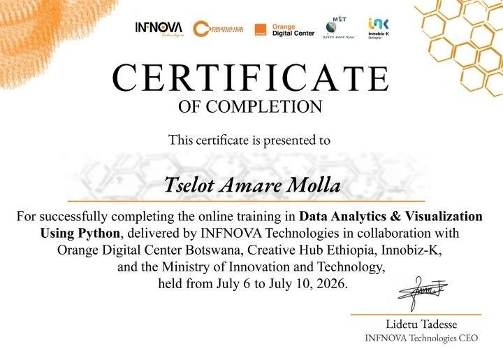

Hello! I am Tselot Amare, a freshman student at
AAU
.I have a strong interest in technology
and enjoy learning
programming skills.
I am currently building my knowledge in web
development and working toward a career in Software Engineering.
My goal is to become a Web Developer and AI Engineer,
creating useful and innovative solutions for the future.
I am currently a freshman student at Addis Ababa University, where
I am building my academic foundation
and preparing for my future
journey in Software engineering. Alongside my university education, I am actively learning
programming languages such as Python and developing my skills
in front-end development.
I have also completed a course in Data Visualization
and Data Analysis, where I gained knowledge about working with data,
creating visual insights, and understanding information
through analysis.

Success isn't always about greatness. It's about
consistency.
- Dwayne Johnson
Consistent hard work leads to success.
| My Weekly Schedule | |||
|---|---|---|---|
| Day | Morning | Afternoon | Evening |
| Monday | University Classes | Review Lessons | Python Practice |
| Tuesday | Study Materials | HTML and CSS practice | Build Projects |
| Wednesday | University Work | Coding Challenges | Learn New concepts |
| Thursday | Review Notes | Data Analysis | Project Work |
| Friday | Study | Programming Practice | Portfolio improvement |
| Saturday | Personal projects | Explore Technologies | Skill Practice |
| Sunday | Weekly Review | Plan Goals | Research and reading |